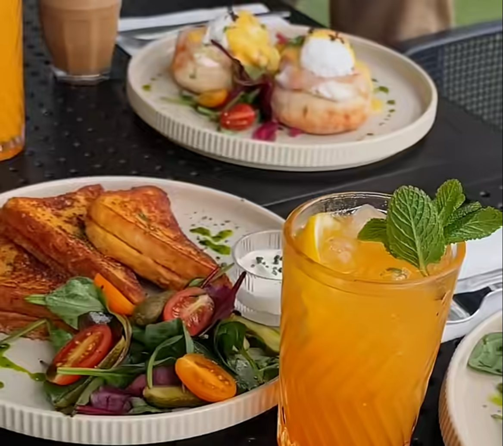
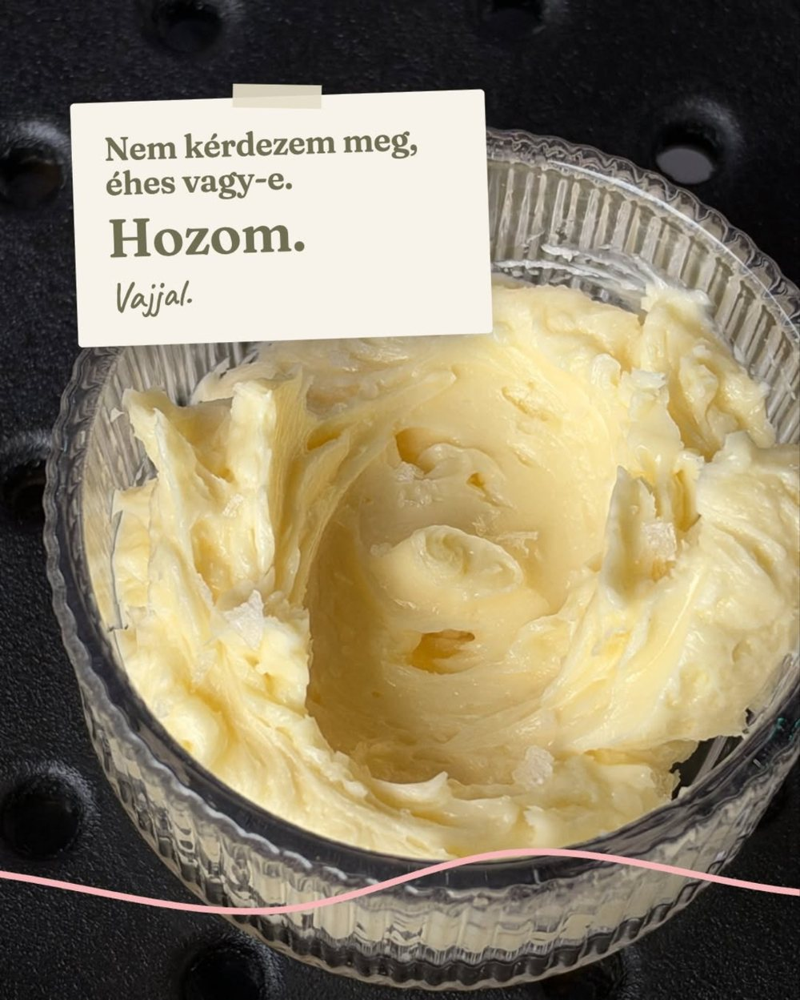
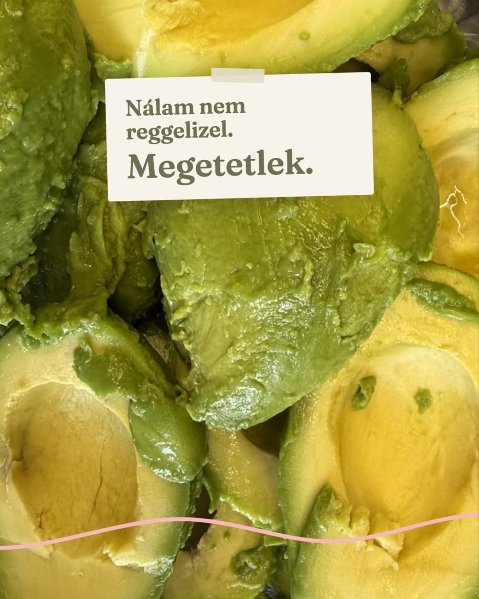
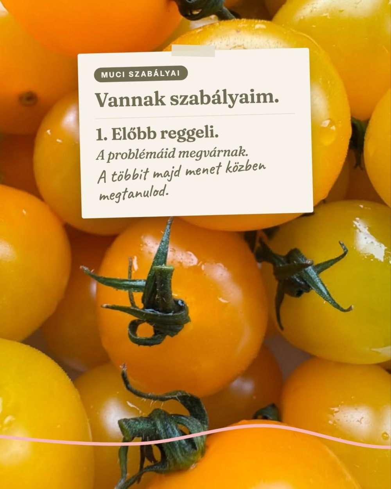
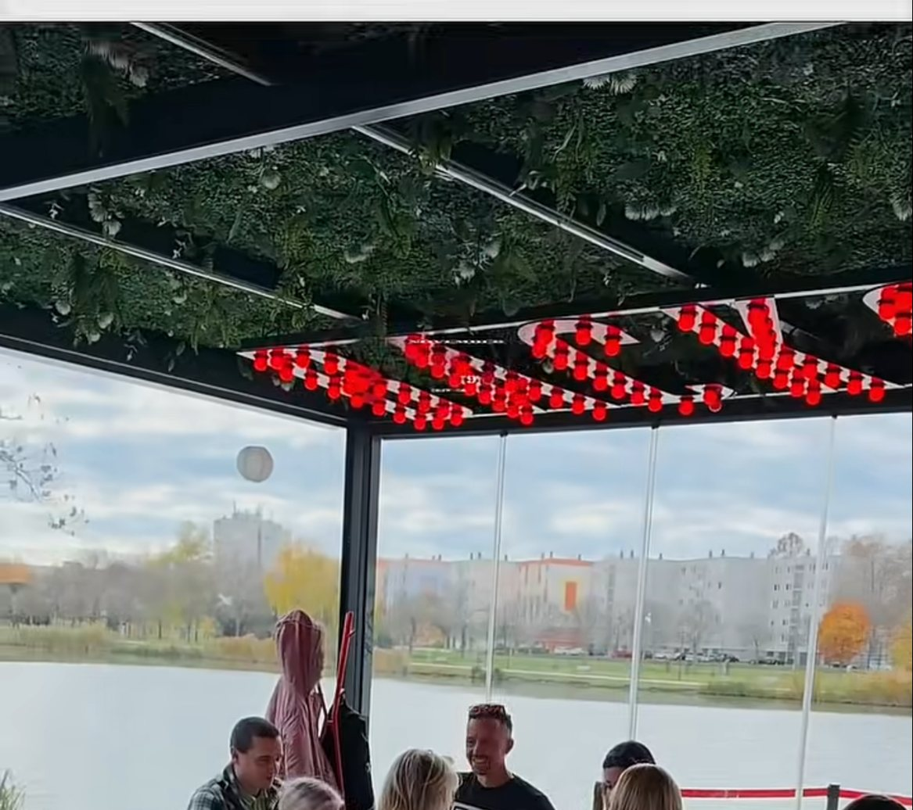

Éhgyomorra sehova.
Reggeliző és brunch Ajkán, a Jubileum park tavának partján.

Azt mondják, a reggeli a nap legfontosabb étkezése. Én azt mondom, legyen a legjobb is.
Korán kelek. Sokat főzök. Mindenről van véleményem. A kávé szerintem nem reggeli, ezért nálam nem csak kávézol: leülsz, és megetetlek.
Ajka, éhes vagy? Valaki készül megetetni.
Ez kerül az asztalra.
Benedict tojás, tükörtojás, édes és sós tányérok, és persze kávé. De az csak kiegészítő.



Vannak szabályaim.
1. Előbb reggeli.A problémáid megvárnak. A többit majd menet közben megtanulod.





Nov. 25–29.próbafőzés
Halkan nyitunk: ezen a héten még próbafőzünk, nektek terítünk szerdától reggel 8-tól. Gyere, kóstold meg, és mondd el, mit gondolsz. Nekem is mindenről van véleményem.
Asztalt foglalokReggeli a tó partján.
A Jubileum park tavára néz az üvegfal. Fent zöld lombmennyezet és színes fényfüzér, kint a fűzfák. Ősszel is jó itt ülni.



Itt találsz.
- Cím
- 8400 Ajka, Jubileum park 2.
- Nyitás
- November 25-től, szerdán reggel 8-tól.
A végleges nyitvatartás itt jelenik meg. - mucireggelije@gmail.com
- MuCi Reggelije & Brunch Ajka